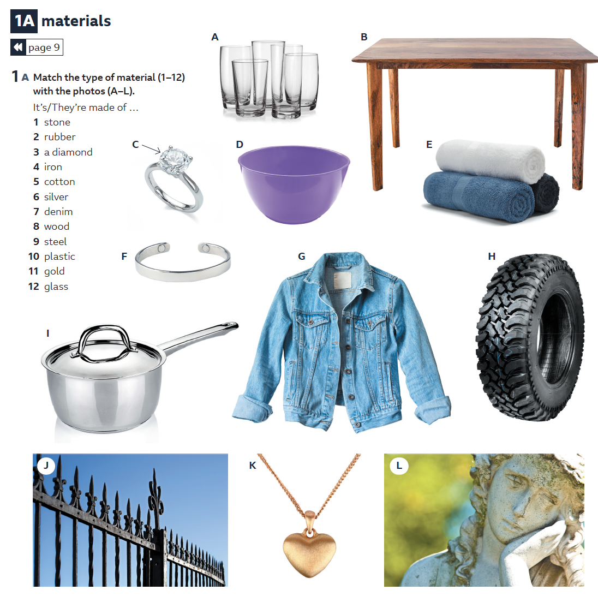

1. Warm-up — Speaking
- What is it?
- Where / how did you get it?
- Why is it special to you?
Just talk for 2–3 minutes. We'll come back to this at the end of the lesson with the full "story of me" speaking task.
2. Listening
Read the story and look at the pictures. Why might these objects be important to the speakers?
A Story of Me in Three Objects
The objects that we choose to have around us reflect our personalities in different ways. Our possessions contain our memories; they remind us of people and places in our lives. In this podcast we ask people to choose three objects from their life that they would never throw away, and tell us about them.
A. Listen and number the objects in the order you hear them
(Marta's three objects, then Tim's three objects)
Tim: 4 Spanish guitar → 5 walking boots → 6 coffee pot
B. Listen again. True or False?
- Marta inherited a valuable ring from her mother.
- Marta borrowed a jacket from a friend.
- One of Marta's friends helped her dream to come true.
- The owner of the guitar shop asked Tim if he was a professional.
- Tim enjoys walking with friends.
- Tim always made good coffee when he was at university.
C. Discuss
3. Vocabulary — Describing Possessions
From Marta's story:
"I've worn silver rings all my life. … This one belonged to my mother and I inherited it when she died. It's not worth a lot, but it's very special to me."
"I borrowed this leather jacket from a friend when I was studying at university … It's a genuine 1980s leather jacket … When I was wearing it, I always thought it looked really cool. It's a bit damaged now, but I still love it."
Match the word to the definition
- If something was owned by someone else, we can say it
- If something is not valuable, it's
- If it's made of animal skin, it's
- If you received a possession after someone died, you it.
- If something is real, not a copy, it's
- Something broken in some way is
- If something has emotional importance, it's
- If something looks good in a fashionable way, it's
Quick speaking
Match the type of material with the photos

Complete the sentences with the most suitable material
- I've just ordered a new jacket online. It's a cool designer jacket at a really good price.
- She creates beautiful statues using imported from the mountains of Italy.
- She inherited some jewellery, and one of the rings had a huge in it. It's worth lots of money.
- I love sleeping in clean, white sheets.
- He bought a set of pans for his new kitchen.
- The is kept in the bank.
- The shoes on a horse are made of .
- The of her car tyres left black marks on the road.
- I dropped the bottle on the floor and it smashed.
- The house has beautiful floors made of taken from the local forests.
- She finished second and won a medal.
- I always recycle my bottles.
4. Grammar — Narrative Tenses
When we tell a story, we oft en use a variety of tenses. These are called ‘narrative tenses’ and they include the past simple, the past continuous and the past perfect. It is important to use the correct tense as this gives us information about the sequence of events and the most important details of the story.
Past simple — the main events, in order: Suddenly, he heard a crash. She woke up early and decided to go out.
Past continuous — background, or a temporary/changing situation happening at the time of the main event: The sun was shining. I was living in Brazil at the time.
Past perfect — something that happened before the main story moment: I bought it to replace one that I'd lost.
A. Choose the correct tense
- I (was jogging / jogged)along the beach when suddenly, I (realised / had realised) I didn't have my wedding ring. I (was dropping / had dropped) it on the beach somewhere.
- I (was looking / looked)for my ring when an old lady (came / had come) up to me. She (was finding / had found) my ring on her morning walk.
- My granddad (was fishing / fished) when he (was catching / caught) an old wallet with his fishing rod. He was amazed to see it was his own wallet, which he (was losing / had lost) in the same lake twenty years earlier!
- I (was studying / had studied) at university in California when my sister suddenly (decided / was deciding) to come and visit me. I was so surprised because she (hadn't said / wasn't saying) anything about her plans.
2 was looking, came, had found
3 was fishing, caught, had lost
4 was studying, decided, hadn't said
B. Complete the story — "This old leather suitcase..."
This old leather suitcase is very special to me. It belonged to my father and it's a bit damaged now. I remember when I was a child, my mother and I at my grandmother's house. I my father for a long time. When he at the house, he this old suitcase, and it had all these labels on it from around the world. He from a trip across Asia. When he saw me, he sat down and the suitcase. He pulled out a beautiful doll and it to me. It's one of my earliest memories.
C. Complete the story — the red toy car
When I was six years old, my parents me a large, red, toy car for my birthday. I cars and I was so excited to try out my new present. We at my grandparent's house for the summer holidays and I asked if I could try the car outside.
(continue: I drove / was going... down the hill when I realised the brakes had completely broken and I crashed... someone was laughing)
5. Pronunciation — Weak Forms of Auxiliary Verbs
- I around Australia.
- We in China.
- He at university.
- I bought a new leather jacket to replace the one I .
- My mother the ring to me.
- He me making coffee.
The auxiliary verbs are not stressed — they are weak forms.
Listen again and repeat after the speaker.
6. Speaking — A Story of Me in Three Objects
Example: "This old leather biker's jacket belonged to my dad. He wore it a lot when he was living and working in London. He'd finished university and was working as a motorcycle courier. It's a bit damaged now, but it's very special to me, even if I don't actually wear it much anymore."